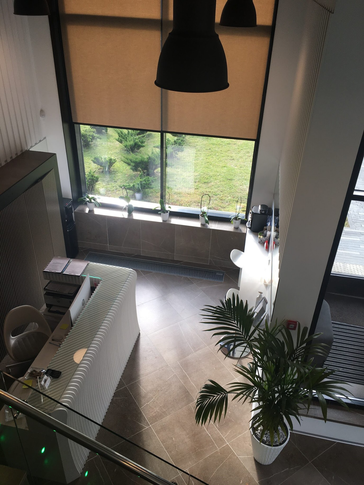
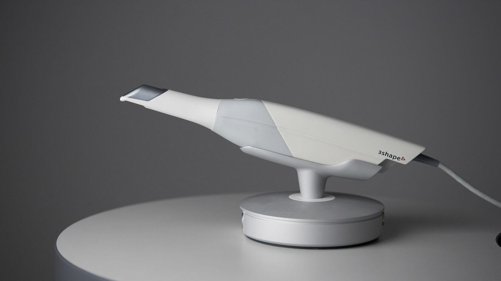
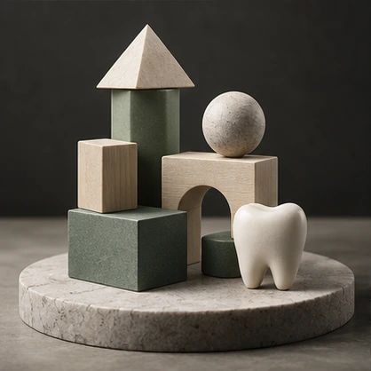
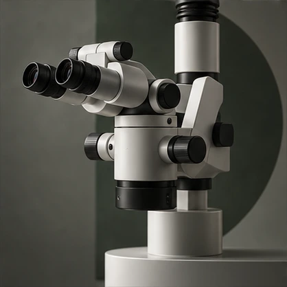
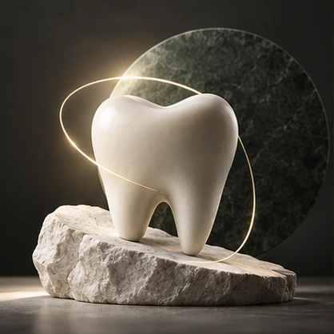
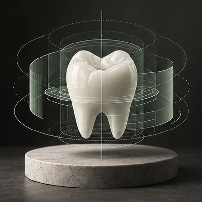

Продуманные визиты
Планируем необходимое число посещений; сроки определяются после диагностики.
Москва · Спартак
К78 — семейная стоматология для взрослых и детей. Объясняем варианты лечения и помогаем разобраться в каждом этапе.
Внимание к деталям.
Забота на каждом этапе.

Планируем необходимое число посещений; сроки определяются после диагностики.
Обсуждаем ощущения и варианты обезболивания до начала процедуры.
Специалисты разных направлений помогают подобрать план лечения под вашу задачу.
Приём ведут высококлассные специалисты, кандидаты медицинских наук.
Направления
От профилактики и диагностики до восстановления улыбки. Выберите направление, чтобы узнать больше.

О клинике
На приёме врач выслушает вас, проведёт осмотр и обсудит возможные варианты. Вы сможете задать вопросы и понять, какие шаги могут быть следующими.
Сначала — понять
Разбираемся в ситуации и запросе.
Затем — обсудить
Объясняем план и возможные варианты.
И только потом — решить
Вы принимаете решение вместе с врачом.
Технологии
В клинике используют цифровое оборудование, в том числе интраоральный сканер. Он помогает получить цифровую модель зубных рядов для планирования лечения.
Узнать подробнее
Цифровое сканирование
Детская стоматология
Ребёнку объясняют каждый шаг и помогают освоиться. Подход, материалы и варианты обезболивания врач подбирает с учётом возраста и ситуации.
Дентальный микроскоп
При работе с увеличением врач видит рабочую область подробнее и контролирует этапы сложных манипуляций. Использование микроскопа зависит от задачи.


План лечения
После обследования врач может описать обнаруженные особенности, возможные решения, этапы и сроки, методы, материалы и стоимость. План зависит от клинической ситуации.
Цифровой дизайн улыбки
Визуализация помогает обсудить форму будущей улыбки и ожидания до лечения. Возможность такого этапа и точность прогноза уточняют у врача.

Забота и доверие
Безопасность, гарантии на материалы и работу клиники — важные части заботы о пациенте.
В клинике измеряют температуру сотрудников и посетителей, проводят генеральную уборку и дезинфекцию кабинетов, регулярно обрабатывают поверхности санузлов.
Для каждого посетителя предусмотрены средства индивидуальной защиты; врачи вакцинированы.Пожизненная гарантия на материалы. Именной сертификат позволяет бесплатно восстановить любой дефект. Если дефект возник по вине клиники, мы бесплатно устраним его в течение 5 лет с момента установки импланта.
Собственная зуботехническая лаборатория повышает точность изготовления и сокращает сроки ожидания.Команда
Отзывы пациентов
Прекрасная клиника.
Врачи очень компетентные и душевные.
Отличная, современная клиника.
Отзывы опубликованы на официальном сайте К78.
Все отзывыПеред визитом
Короткие ответы помогут сориентироваться. Ответили на частые вопросы об услугах, стоимости и первом визите.
Посмотреть ценыЕсли пока нет ясности, позвоните в клинику и опишите свой вопрос. Врач определит дальнейшие шаги после оценки ситуации.
На странице собраны цены на отдельные услуги. Стоимость лечения врач рассчитает после осмотра и согласования плана.
Позвоните по номеру на странице контактов и уточните расписание и возможность приёма.
Контакты
Позвоните нам, чтобы уточнить информацию и выбрать удобное время для визита.
+7 (495) 324-64-84Москва, Волоколамское шоссе, 71к1
м. Спартак · м. Тушинская
Пн–Сб · 09:00–21:00
Воскресенье — выходной